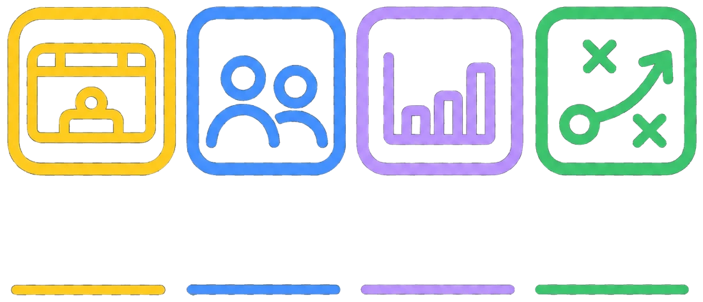

Välj app
Tracker
Följ målvaktens räddningar och skott match för match.
Teambuilder
Bygg trupper och lag för träning och cuper.
Playbook
Beta
Rita spelmönster och spela upp dem steg för steg.
Matchanalys
Beta
Se vad laget behöver träna på utifrån matchrapporterna.
Målvaktskompendium
Målvaktsträning för unga målvakter att läsa och ta med.